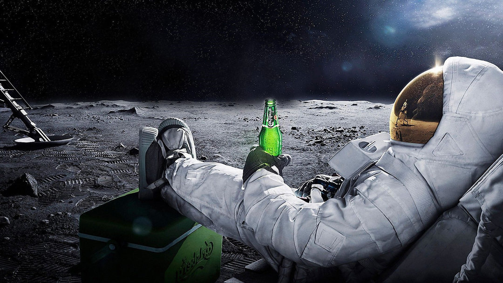

3 Greatest Technologies of Twenty-first Century
If the twentieth century was the dawn of spaceflight, then the twenty-first is its full, bright morningWe have probes and robots exploring every corner of our solar system; we have orbiting telescopes mapping the entire galaxy as well as near-Earth objects and we have a permanent outpost in space, the International Space Station Plus, the successful rendezvous between SpaceX's Falcon 9 rocket and the ISS brought us officially into the age of commercial space flight. Space technology is not a new but very hot field today!

1. Cassini-Huygens Probe
The Cassini-Huygens mission is a joint effort between NASA and ESA. NASA's Cassini probe arrived at Saturn in 2004, and dropped ESA's Huygens probe into the atmosphere of Saturn's mysterious moon, Titan, which has a thick atmosphere and weather that is surprisingly similar to Earth's Scientists are still poring over data from the Titan mission, and Cassini's many on-board instruments continue to provide us with data on Saturn, as well as its magnetosphere and its icy, watery moon Enceladus Have you seen a gorgeous picture of Saturn lately? That's thanks to Cassini.

2. Mars Reconnaissance Orbiter
Launched in 2005 by NASA, the Mars Reconnaissance Orbiter currently orbiting Mars, studying the history of water on the planet. It's analyzing geographical features like canyons that might have been created by water, as well as using a spectrometer to analyze the chemical composition of the Martian surface. Its HiRISE camera can spy objects as "small as a dinner table," according to NASA, and it has even captured images of the three Martian rovers that are currently rolling (or parked) on the Martian regolith. Many of the discoveries about Martian water history and weather are due to the MRO, as are any number of breathtaking shots of the planet's surface. Above, a picture that the MRO snapped of a rarely-seen Martian avalanche.

3. Hubble Space Telescope
Launched into orbit in 1990, the Hubbletruly is one of the greatest space instruments in the history of humanity. And it has been updated significantly in the twenty-first century. Powered by sunlight, equipped with multiple instruments and cameras for capturing images of deep space, the Hubble has shown us images of the universe that would have been impossible for Earth-based telescopes. Using Hubble, we've discovered dark energy, figured out the identities of quasars, gotten a more accurate date for the origin of the universe, and spotted countless galaxies at every stage of their life cycles. NASA estimates that over 10,000 scientific papers have been written based on data gathered by Hubble.